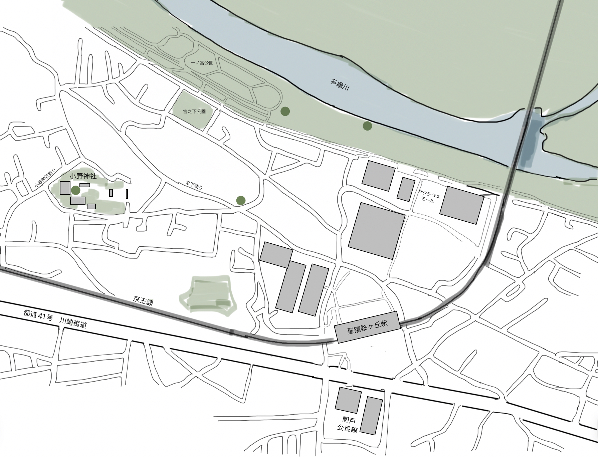

聖蹟桜ヶ丘駅周辺エリアについて
聖蹟桜ヶ丘駅は京王線の主要駅の一つで、多摩川南側エリアの交通の要衝として機能しています。駅周辺には商業施設や住宅地が広がり、多摩川の自然環境と都市機能が調和したエリアです。
このエリアは「耳をすませば」などのスタジオジブリ作品の舞台としても知られており、映画ファンにとっても特別な場所となっています。また、多摩川河川敷へのアクセスも良く、自然散策の拠点としても人気があります。
詳細な地図では、駅から各スポットへのルートや、周辺の施設、公園などがより詳しく確認できます。